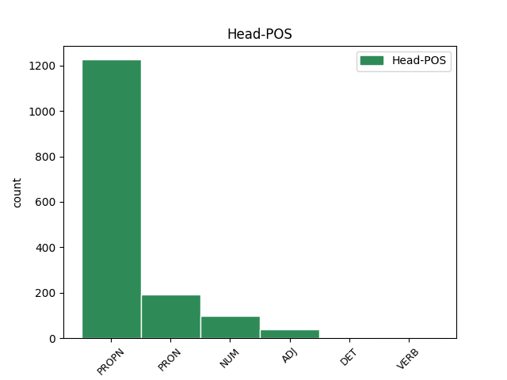

Distribution of features within this leaf

Agreement Rules sorted by frequency.
- When the dependent token is the modifer(mod) of the head token, and the head token is PROPN and the dependent token is PROPN.
1 Ka _ _ _ _ 0 _ _ _
2 Eesti Eesti PROPN S Case=Gen|Number=Sing 3 mod _ _
3 Panga Pank PROPN S Case=Gen|Number=Sing 0 _ _ _
4 viimased _ _ _ _ 0 _ _ _
5 analüüsid _ _ _ _ 0 _ _ _
6 , _ _ _ _ 0 _ _ _
7 mis _ _ _ _ 0 _ _ _
8 on _ _ _ _ 0 _ _ _
9 tehtud _ _ _ _ 0 _ _ _
10 aastate _ _ _ _ 0 _ _ _
11 2001 _ _ _ _ 0 _ _ _
12 ja _ _ _ _ 0 _ _ _
13 2002 _ _ _ _ 0 _ _ _
14 kohta _ _ _ _ 0 _ _ _
15 , _ _ _ _ 0 _ _ _
16 näitavadki _ _ _ _ 0 _ _ _
17 , _ _ _ _ 0 _ _ _
18 et _ _ _ _ 0 _ _ _
19 majanduskasvu _ _ _ _ 0 _ _ _
20 " _ _ _ _ 0 _ _ _
21 mootoreiks _ _ _ _ 0 _ _ _
22 " _ _ _ _ 0 _ _ _
23 on _ _ _ _ 0 _ _ _
24 peale _ _ _ _ 0 _ _ _
25 2001. _ _ _ _ 0 _ _ _
26 aastat _ _ _ _ 0 _ _ _
27 üha _ _ _ _ 0 _ _ _
28 enam _ _ _ _ 0 _ _ _
29 olnud _ _ _ _ 0 _ _ _
30 sisemaine _ _ _ _ 0 _ _ _
31 nõudlus _ _ _ _ 0 _ _ _
32 . _ _ _ _ 0 _ _ _
1 Siin _ _ _ _ 0 _ _ _
2 piirdume _ _ _ _ 0 _ _ _
3 vaid _ _ _ _ 0 _ _ _
4 nendega _ _ _ _ 0 _ _ _
5 , _ _ _ _ 0 _ _ _
6 mis _ _ _ _ 0 _ _ _
7 toimuvad _ _ _ _ 0 _ _ _
8 meie mina PRON P Case=Gen|Number=Plur|Person=1|PronType=Prs 0 _ _ _
9 endi ise PRON P Case=Gen|Number=Plur|PronType=Prs|Reflex=Yes 8 mod _ _
10 Galaktika _ _ _ _ 0 _ _ _
11 piirides _ _ _ _ 0 _ _ _
12 . _ _ _ _ 0 _ _ _
1 Tööjõu _ _ _ _ 0 _ _ _
2 mobiilsus _ _ _ _ 0 _ _ _
3 , _ _ _ _ 0 _ _ _
4 mõõdetuna _ _ _ _ 0 _ _ _
5 seisundite _ _ _ _ 0 _ _ _
6 vahelise _ _ _ _ 0 _ _ _
7 liikumise _ _ _ _ 0 _ _ _
8 tõenäosusega _ _ _ _ 0 _ _ _
9 , _ _ _ _ 0 _ _ _
10 oli _ _ _ _ 0 _ _ _
11 üldiselt _ _ _ _ 0 _ _ _
12 kõrgem _ _ _ _ 0 _ _ _
13 90ndate _ _ _ _ 0 _ _ _
14 alguses _ _ _ _ 0 _ _ _
15 ja _ _ _ _ 0 _ _ _
16 langes _ _ _ _ 0 _ _ _
17 90ndate _ _ _ _ 0 _ _ _
18 lõpul _ _ _ _ 0 _ _ _
19 ( _ _ _ _ 0 _ _ _
20 Eamets _ _ _ _ 0 _ _ _
21 , _ _ _ _ 0 _ _ _
22 2001 _ _ _ _ 0 _ _ _
23 : _ _ _ _ 0 _ _ _
24 161 _ _ _ _ 0 _ _ _
25 ja _ _ _ _ 0 _ _ _
26 Rõõm Rõõm PROPN S Case=Nom|Number=Sing 0 _ _ _
27 , _ _ _ _ 0 _ _ _
28 2002 _ _ _ _ 0 _ _ _
29 : _ _ _ _ 0 _ _ _
30 7 7 NUM N Case=Nom|Number=Sing|NumForm=Digit|NumType=Card 26 mod _ SpaceAfter=No
31 ) _ _ _ _ 0 _ _ _
32 . _ _ _ _ 0 _ _ _
1 Phillips Phillips PROPN S Case=Nom|Number=Sing 0 _ _ _
2 ise ise PRON P Case=Nom|Number=Sing|PronType=Prs|Reflex=Yes 1 mod _ _
3 oli _ _ _ _ 0 _ _ _
4 esitanud _ _ _ _ 0 _ _ _
5 empiirilised _ _ _ _ 0 _ _ _
6 tulemused _ _ _ _ 0 _ _ _
7 ning _ _ _ _ 0 _ _ _
8 proovis _ _ _ _ 0 _ _ _
9 neid _ _ _ _ 0 _ _ _
10 veidi _ _ _ _ 0 _ _ _
11 seletada _ _ _ _ 0 _ _ _
12 . _ _ _ _ 0 _ _ _
1 Umbes _ _ _ _ 0 _ _ _
2 ühel üks NUM N Case=Ade|Number=Sing|NumForm=Letter|NumType=Card 3 mod _ _
3 kolmandikul kolmandik NUM N Case=Ade|Number=Sing|NumForm=Letter|NumType=Card 0 _ _ _
4 patsientidest _ _ _ _ 0 _ _ _
5 võib _ _ _ _ 0 _ _ _
6 esineda _ _ _ _ 0 _ _ _
7 kerge _ _ _ _ 0 _ _ _
8 kuni _ _ _ _ 0 _ _ _
9 mõõdukas _ _ _ _ 0 _ _ _
10 steatorröa _ _ _ _ 0 _ _ _
11 ( _ _ _ _ 0 _ _ _
12 4 _ _ _ _ 0 _ _ _
13 ) _ _ _ _ 0 _ _ _
14 . _ _ _ _ 0 _ _ _
1 Maailmas _ _ _ _ 0 _ _ _
2 enim _ _ _ _ 0 _ _ _
3 kasutatav _ _ _ _ 0 _ _ _
4 geneeriline _ _ _ _ 0 _ _ _
5 tervisest _ _ _ _ 0 _ _ _
6 sõltuva _ _ _ _ 0 _ _ _
7 elukvaliteedi _ _ _ _ 0 _ _ _
8 küsimustik _ _ _ _ 0 _ _ _
9 RAND _ _ _ _ 0 _ _ _
10 36-Items _ _ _ _ 0 _ _ _
11 Health _ _ _ _ 0 _ _ _
12 Survey _ _ _ _ 0 _ _ _
13 ( _ _ _ _ 0 _ _ _
14 RAND-36 _ _ _ _ 0 _ _ _
15 ) _ _ _ _ 0 _ _ _
16 ning _ _ _ _ 0 _ _ _
17 selle _ _ _ _ 0 _ _ _
18 skoorimispõhimõtetelt _ _ _ _ 0 _ _ _
19 erinev _ _ _ _ 0 _ _ _
20 analoog _ _ _ _ 0 _ _ _
21 Short-Form Short-Form PROPN S Case=Nom|Number=Sing 22 mod _ _
22 36 36 NUM N Case=Nom|Number=Sing|NumForm=Digit|NumType=Card 0 _ _ _
23 ( _ _ _ _ 0 _ _ _
24 SF-36 _ _ _ _ 0 _ _ _
25 ) _ _ _ _ 0 _ _ _
26 on _ _ _ _ 0 _ _ _
27 leidnud _ _ _ _ 0 _ _ _
28 tunnustust _ _ _ _ 0 _ _ _
29 ka _ _ _ _ 0 _ _ _
30 Eesti _ _ _ _ 0 _ _ _
31 uurijate _ _ _ _ 0 _ _ _
32 seas _ _ _ _ 0 _ _ _
33 elukvaliteedi _ _ _ _ 0 _ _ _
34 hindamisel _ _ _ _ 0 _ _ _
35 erinevates _ _ _ _ 0 _ _ _
36 krooniliste _ _ _ _ 0 _ _ _
37 haigete _ _ _ _ 0 _ _ _
38 rühmades _ _ _ _ 0 _ _ _
39 ( _ _ _ _ 0 _ _ _
40 10 _ _ _ _ 0 _ _ _
41 , _ _ _ _ 0 _ _ _
42 11 _ _ _ _ 0 _ _ _
43 , _ _ _ _ 0 _ _ _
44 12 _ _ _ _ 0 _ _ _
45 ) _ _ _ _ 0 _ _ _
46 . _ _ _ _ 0 _ _ _
1 Nad _ _ _ _ 0 _ _ _
2 tulevad _ _ _ _ 0 _ _ _
3 kolmekesi _ _ _ _ 0 _ _ _
4 - _ _ _ _ 0 _ _ _
5 sir _ _ _ _ 0 _ _ _
6 Parcival _ _ _ _ 0 _ _ _
7 , _ _ _ _ 0 _ _ _
8 kelle _ _ _ _ 0 _ _ _
9 käsivarred _ _ _ _ 0 _ _ _
10 on _ _ _ _ 0 _ _ _
11 jämedad _ _ _ _ 0 _ _ _
12 nagu _ _ _ _ 0 _ _ _
13 tammed _ _ _ _ 0 _ _ _
14 ja _ _ _ _ 0 _ _ _
15 kelle _ _ _ _ 0 _ _ _
16 rusikas _ _ _ _ 0 _ _ _
17 suudab _ _ _ _ 0 _ _ _
18 purustada _ _ _ _ 0 _ _ _
19 munakivi _ _ _ _ 0 _ _ _
20 ; _ _ _ _ 0 _ _ _
21 sir _ _ _ _ 0 _ _ _
22 Bors _ _ _ _ 0 _ _ _
23 de _ _ _ _ 0 _ _ _
24 Granis _ _ _ _ 0 _ _ _
25 , _ _ _ _ 0 _ _ _
26 kes _ _ _ _ 0 _ _ _
27 on _ _ _ _ 0 _ _ _
28 eriti _ _ _ _ 0 _ _ _
29 osav _ _ _ _ 0 _ _ _
30 piigivõitluses _ _ _ _ 0 _ _ _
31 ega _ _ _ _ 0 _ _ _
32 ole _ _ _ _ 0 _ _ _
33 veel _ _ _ _ 0 _ _ _
34 iialgi _ _ _ _ 0 _ _ _
35 lahkunud _ _ _ _ 0 _ _ _
36 turniirilt _ _ _ _ 0 _ _ _
37 ilma _ _ _ _ 0 _ _ _
38 võidupärjata _ _ _ _ 0 _ _ _
39 ; _ _ _ _ 0 _ _ _
40 ja _ _ _ _ 0 _ _ _
41 sir _ _ _ _ 0 _ _ _
42 Galahad _ _ _ _ 0 _ _ _
43 , _ _ _ _ 0 _ _ _
44 kes _ _ _ _ 0 _ _ _
45 on _ _ _ _ 0 _ _ _
46 neist tema PRON P Case=Ela|Number=Plur|Person=3|PronType=Prs 47 mod _ _
47 kolmest kolm NUM N Case=Ela|Number=Sing|NumForm=Letter|NumType=Card 0 _ _ _
48 kõige _ _ _ _ 0 _ _ _
49 vapram _ _ _ _ 0 _ _ _
50 ja _ _ _ _ 0 _ _ _
51 hulljulgem _ _ _ _ 0 _ _ _
52 ning _ _ _ _ 0 _ _ _
53 kes _ _ _ _ 0 _ _ _
54 on _ _ _ _ 0 _ _ _
55 suure _ _ _ _ 0 _ _ _
56 sir _ _ _ _ 0 _ _ _
57 Lanceloti _ _ _ _ 0 _ _ _
58 enda _ _ _ _ 0 _ _ _
59 poeg _ _ _ _ 0 _ _ _
60 ! _ _ _ _ 0 _ _ _
1 Nende _ _ _ _ 0 _ _ _
2 uurimuses _ _ _ _ 0 _ _ _
3 söödeti _ _ _ _ 0 _ _ _
4 60 60 NUM N Case=All|Number=Sing|NumForm=Digit|NumType=Card 5 mod _ _
5 naiskatsealusele nais_katse_alune ADJ A Case=All|Degree=Pos|Number=Sing 0 _ _ _
6 kas _ _ _ _ 0 _ _ _
7 3 _ _ _ _ 0 _ _ _
8 ω-3-rasvhapetega _ _ _ _ 0 _ _ _
9 rikastatud _ _ _ _ 0 _ _ _
10 muna _ _ _ _ 0 _ _ _
11 või _ _ _ _ 0 _ _ _
12 200 _ _ _ _ 0 _ _ _
13 g _ _ _ _ 0 _ _ _
14 broileri- _ _ _ _ 0 _ _ _
15 või _ _ _ _ 0 _ _ _
16 200 _ _ _ _ 0 _ _ _
17 g _ _ _ _ 0 _ _ _
18 sealiha _ _ _ _ 0 _ _ _
19 ( _ _ _ _ 0 _ _ _
20 samuti _ _ _ _ 0 _ _ _
21 ω-3-rasvhapetega _ _ _ _ 0 _ _ _
22 rikastatud _ _ _ _ 0 _ _ _
23 ) _ _ _ _ 0 _ _ _
24 päevas _ _ _ _ 0 _ _ _
25 . _ _ _ _ 0 _ _ _
1 Erandina _ _ _ _ 0 _ _ _
2 on _ _ _ _ 0 _ _ _
3 Merkuuri _ _ _ _ 0 _ _ _
4 orbiit _ _ _ _ 0 _ _ _
5 Maa Maa PROPN S Case=Gen|Number=Sing 6 mod _ _
6 oma oma PRON P Case=Gen|Number=Sing|Poss=Yes|PronType=Prs 0 _ _ _
7 suhtes _ _ _ _ 0 _ _ _
8 kaldu _ _ _ _ 0 _ _ _
9 siiski _ _ _ _ 0 _ _ _
10 7 _ _ _ _ 0 _ _ _
11 kraadi _ _ _ _ 0 _ _ _
12 . _ _ _ _ 0 _ _ _
1 Teiste _ _ _ _ 0 _ _ _
2 lahendusmeetodite _ _ _ _ 0 _ _ _
3 hulgas _ _ _ _ 0 _ _ _
4 tundus _ _ _ _ 0 _ _ _
5 Brian _ _ _ _ 0 _ _ _
6 Schotti _ _ _ _ 0 _ _ _
7 oma oma PRON P Case=Nom|Number=Sing|Poss=Yes|PronType=Prs 10 mod _ _
8 olevat _ _ _ _ 0 _ _ _
9 eriti _ _ _ _ 0 _ _ _
10 selge selge ADJ A Case=Nom|Degree=Pos|Number=Sing 0 _ _ _
11 ja _ _ _ _ 0 _ _ _
12 asjalik _ _ _ _ 0 _ _ _
13 . _ _ _ _ 0 _ _ _
1 Parlamendiliige _ _ _ _ 0 _ _ _
2 kinnitas _ _ _ _ 0 _ _ _
3 , _ _ _ _ 0 _ _ _
4 et _ _ _ _ 0 _ _ _
5 ta _ _ _ _ 0 _ _ _
6 ei _ _ _ _ 0 _ _ _
7 tea _ _ _ _ 0 _ _ _
8 midagi _ _ _ _ 0 _ _ _
9 Läti Läti PROPN S Case=Gen|Number=Sing 10 mod _ _
10 vabatahtlike vaba_tahtlik ADJ A Case=Gen|Degree=Pos|Number=Plur 0 _ _ _
11 värbamisest _ _ _ _ 0 _ _ _
12 Tshetsheenia _ _ _ _ 0 _ _ _
13 sõtta _ _ _ _ 0 _ _ _
14 . _ _ _ _ 0 _ _ _
1 Vesinik _ _ _ _ 0 _ _ _
2 moodustab _ _ _ _ 0 _ _ _
3 Päikese _ _ _ _ 0 _ _ _
4 ja _ _ _ _ 0 _ _ _
5 paljude palju PRON P Case=Gen|Number=Plur|PronType=Ind 6 mod _ _
6 teiste teine DET P Case=Gen|Number=Plur|PronType=Dem 0 _ _ _
7 tähtede _ _ _ _ 0 _ _ _
8 tavapärasest _ _ _ _ 0 _ _ _
9 koostisest _ _ _ _ 0 _ _ _
10 73 _ _ _ _ 0 _ _ _
11 % _ _ _ _ 0 _ _ _
12 ja _ _ _ _ 0 _ _ _
13 heelium _ _ _ _ 0 _ _ _
14 25 _ _ _ _ 0 _ _ _
15 % _ _ _ _ 0 _ _ _
16 . _ _ _ _ 0 _ _ _
Disagree Examples:
1 Eesti _ _ _ _ 0 _ _ _
2 Ekspressi _ _ _ _ 0 _ _ _
3 teada _ _ _ _ 0 _ _ _
4 on _ _ _ _ 0 _ _ _
5 Eesti Eesti PROPN S Case=Gen|Number=Sing 6 mod _ _
6 Pank Pank PROPN S Case=Nom|Number=Sing 0 _ _ _
7 uurinud _ _ _ _ 0 _ _ _
8 Hansapanga _ _ _ _ 0 _ _ _
9 tehinguid _ _ _ _ 0 _ _ _
10 , _ _ _ _ 0 _ _ _
11 mis _ _ _ _ 0 _ _ _
12 toimusid _ _ _ _ 0 _ _ _
13 kaks _ _ _ _ 0 _ _ _
14 aastat _ _ _ _ 0 _ _ _
15 tagasi _ _ _ _ 0 _ _ _
16 suvel _ _ _ _ 0 _ _ _
17 ja _ _ _ _ 0 _ _ _
18 mille _ _ _ _ 0 _ _ _
19 käigus _ _ _ _ 0 _ _ _
20 voolas _ _ _ _ 0 _ _ _
21 panka _ _ _ _ 0 _ _ _
22 ligi _ _ _ _ 0 _ _ _
23 miljardi _ _ _ _ 0 _ _ _
24 krooni _ _ _ _ 0 _ _ _
25 ulatuses _ _ _ _ 0 _ _ _
26 kahtlast _ _ _ _ 0 _ _ _
27 raha _ _ _ _ 0 _ _ _
28 . _ _ _ _ 0 _ _ _
1 Eesti Eesti PROPN S Case=Gen|Number=Sing 2 mod _ _
2 Pank Pank PROPN S Case=Nom|Number=Sing 0 _ _ _
3 tunnistab _ _ _ _ 0 _ _ _
4 : _ _ _ _ 0 _ _ _
5 meie _ _ _ _ 0 _ _ _
6 käed _ _ _ _ 0 _ _ _
7 on _ _ _ _ 0 _ _ _
8 liiga _ _ _ _ 0 _ _ _
9 lühikesed _ _ _ _ 0 _ _ _
10 ! _ _ _ _ 0 _ _ _
1 Kas _ _ _ _ 0 _ _ _
2 Eesti Eesti PROPN S Case=Gen|Number=Sing 3 mod _ _
3 Pank Pank PROPN S Case=Nom|Number=Sing 0 _ _ _
4 pöördus _ _ _ _ 0 _ _ _
5 politsei _ _ _ _ 0 _ _ _
6 poole _ _ _ _ 0 _ _ _
7 ? _ _ _ _ 0 _ _ _
1 Kohe _ _ _ _ 0 _ _ _
2 pärast _ _ _ _ 0 _ _ _
3 Eesti Eesti PROPN S Case=Gen|Number=Sing 4 mod _ _
4 Ekspressi Ekspress PROPN S Case=Add|Number=Sing 0 _ _ _
5 kõnet _ _ _ _ 0 _ _ _
6 võttis _ _ _ _ 0 _ _ _
7 aga _ _ _ _ 0 _ _ _
8 Baltreil _ _ _ _ 0 _ _ _
9 Hansapangaga _ _ _ _ 0 _ _ _
10 ühendust _ _ _ _ 0 _ _ _
11 ja _ _ _ _ 0 _ _ _
12 küsis _ _ _ _ 0 _ _ _
13 , _ _ _ _ 0 _ _ _
14 et _ _ _ _ 0 _ _ _
15 mis _ _ _ _ 0 _ _ _
16 toimub _ _ _ _ 0 _ _ _
17 , _ _ _ _ 0 _ _ _
18 et _ _ _ _ 0 _ _ _
19 Eesti _ _ _ _ 0 _ _ _
20 Ekspress _ _ _ _ 0 _ _ _
21 tunneb _ _ _ _ 0 _ _ _
22 asja _ _ _ _ 0 _ _ _
23 vastu _ _ _ _ 0 _ _ _
24 huvi _ _ _ _ 0 _ _ _
25 . _ _ _ _ 0 _ _ _
1 Kohe _ _ _ _ 0 _ _ _
2 pärast _ _ _ _ 0 _ _ _
3 Eesti _ _ _ _ 0 _ _ _
4 Ekspressi _ _ _ _ 0 _ _ _
5 kõnet _ _ _ _ 0 _ _ _
6 võttis _ _ _ _ 0 _ _ _
7 aga _ _ _ _ 0 _ _ _
8 Baltreil _ _ _ _ 0 _ _ _
9 Hansapangaga _ _ _ _ 0 _ _ _
10 ühendust _ _ _ _ 0 _ _ _
11 ja _ _ _ _ 0 _ _ _
12 küsis _ _ _ _ 0 _ _ _
13 , _ _ _ _ 0 _ _ _
14 et _ _ _ _ 0 _ _ _
15 mis _ _ _ _ 0 _ _ _
16 toimub _ _ _ _ 0 _ _ _
17 , _ _ _ _ 0 _ _ _
18 et _ _ _ _ 0 _ _ _
19 Eesti Eesti PROPN S Case=Gen|Number=Sing 20 mod _ _
20 Ekspress Ekspress PROPN S Case=Nom|Number=Sing 0 _ _ _
21 tunneb _ _ _ _ 0 _ _ _
22 asja _ _ _ _ 0 _ _ _
23 vastu _ _ _ _ 0 _ _ _
24 huvi _ _ _ _ 0 _ _ _
25 . _ _ _ _ 0 _ _ _